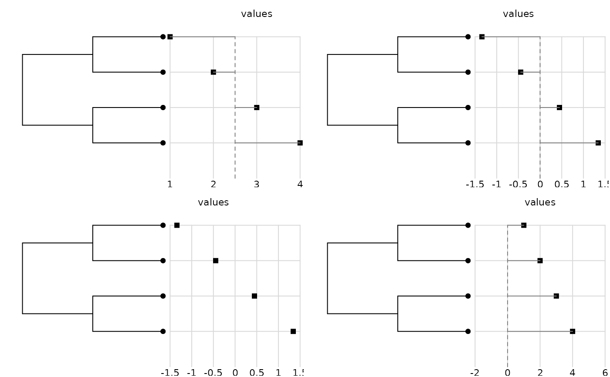
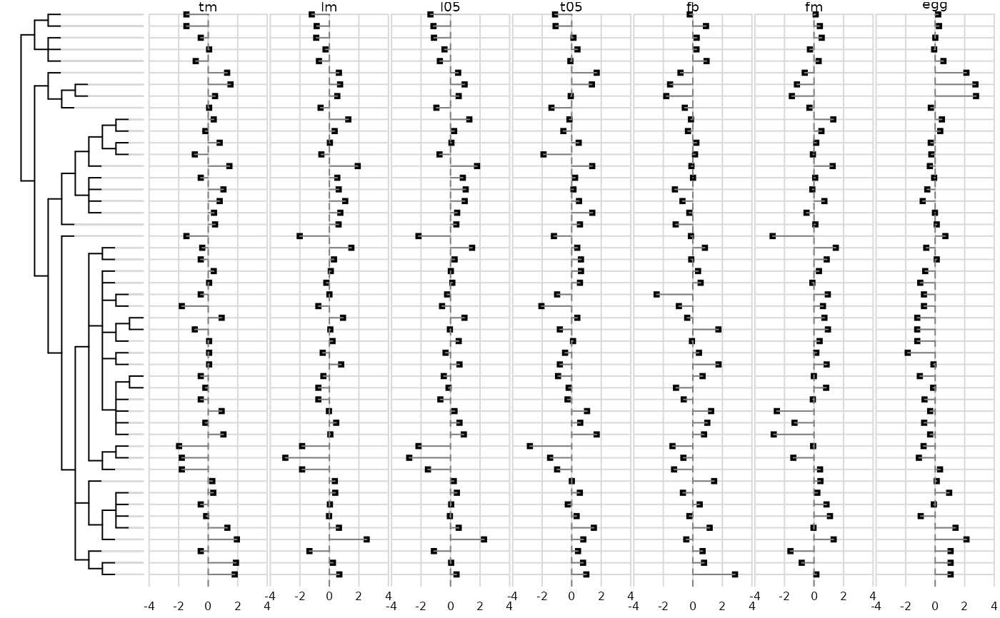

Representation of many quantitative variables in front of a phylogenetic tree
dotchart.phylog.Rddotchart.phylog represents the phylogenetic tree and draws Cleveland dot
plot of each variable.
Usage
dotchart.phylog(phylog, values, y = NULL, scaling = TRUE, ranging =
TRUE, yranging = NULL, joining = TRUE, yjoining = NULL, ceti = 1, cdot =
1, csub = 1, f.phylog = 1/(1 + ncol(values)), ...)Arguments
- phylog
an object of class
phylog- values
a vector or a data frame giving the variables
- y
a vector which values correspond to leaves positions
- scaling
if TRUE, data are scaled
- ranging
if TRUE, dotplots are drawn with the same horizontal limits
- yranging
a vector with two values giving the horizontal limits. If NULL, horizontal limits are defined by lower and upper values of data
- joining
if TRUE, segments join each point to a central value
- yjoining
a vector with the central value. If NULL, the central value equals 0
- ceti
a character size for editing horizontal limits,
used withpar("cex")*ceti- cdot
a character size for plotting the points of the dot plot, used with
par("cex")*cdot- csub
a character size for editing the names of variables,
used withpar("cex")*csub- f.phylog
a size coefficient for tree size (a parameter to draw the tree in proportion to leaves labels)
- ...
further arguments passed to or from other methods
Author
Daniel Chessel
Sébastien Ollier sebastien.ollier@u-psud.fr
Examples
# one variable
tre <- c("((A,B),(C,D));")
phy <- newick2phylog(tre)
x <- 1:4
par(mfrow = c(2,2))
dotchart.phylog(phy, x, scaling = FALSE)
dotchart.phylog(phy, x)
dotchart.phylog(phy, x, joining = FALSE)
dotchart.phylog(phy, x, scaling = FALSE,
yjoining = 0, yranging = c(-1, 5))

par(mfrow = c(1,1))
# many variables
data(mjrochet)
phy <- newick2phylog(mjrochet$tre)
tab <- data.frame(log(mjrochet$tab))
dotchart.phylog(phy, tab, ceti = 0.5, csub = 0.6,
cleaves = 0, cdot = 0.6)

par(mfrow=c(1,1))